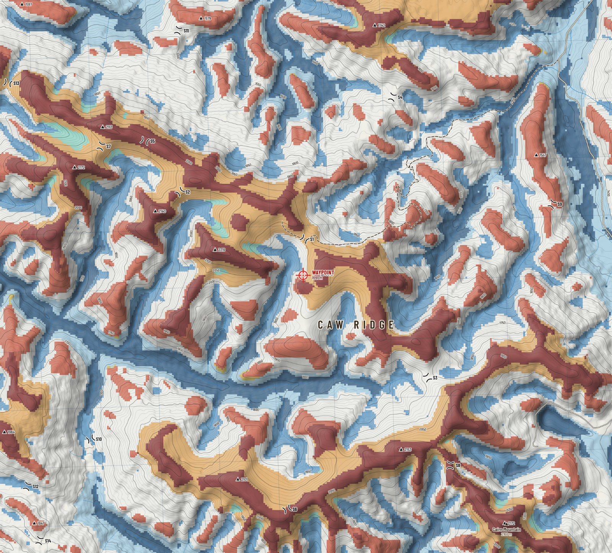
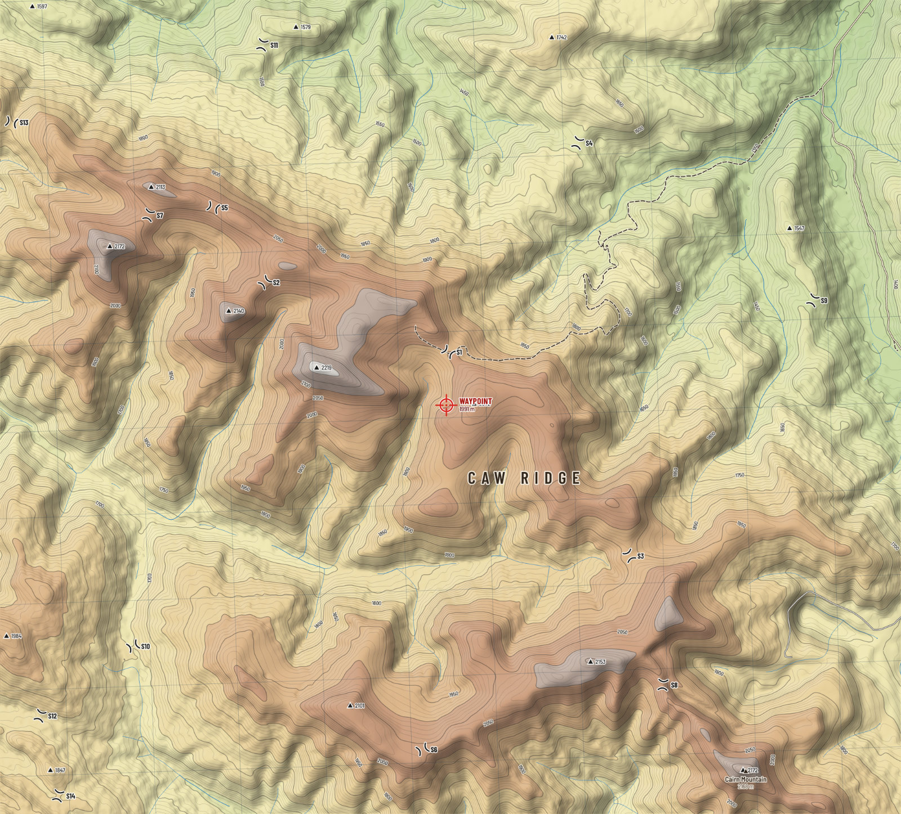
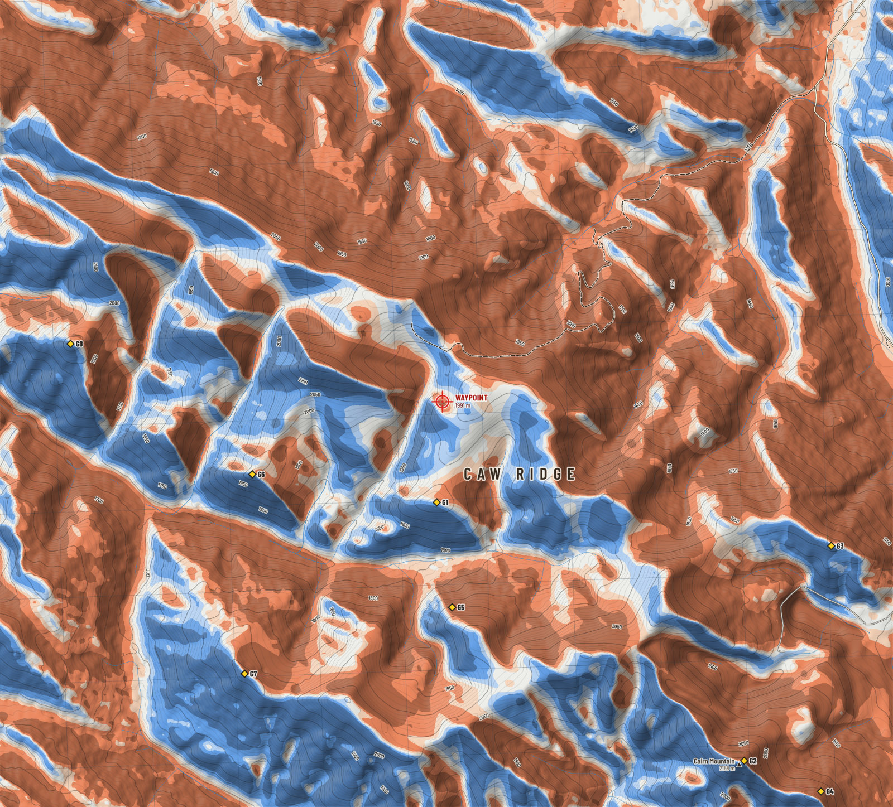

Terrain
Reading the ridge
The elevation model is more than a picture. Run sight lines across it and it tells you where to sit; run the sun across it and it tells you which slope warms first; flood it from the top down and it gives up every summit and every saddle.
In either one, tap any piece of ground to learn its height, slope, aspect, landform, cover, shelter, sun, snow, walking time and whether it can be seen.
- Within 3 km of the waypoint
- 1475 to 2219 mLowest and highest ground.
- Open ground
- 51%Shrub, tundra, grass and rock. The rest is timber.
- Forest gives out at
- About 1940 m95 percent of forest cells lie below this height.
- Steeper than 30°
- 7%Of the ground within 3 km, by the 30 m model.
The waypoint is in a bowl
Your waypoint lies at 1,991 m on ground that faces north-west and falls away at about 19°. Higher ground stands close by: 2,145 m at 990 m to the west, and more of it beyond. The sight lines say that a hunter standing at the waypoint sees 1.4 km², which is 0.7 percent of the ground within 8 km. It is a sheltered place, out of the worst of the wind and off the skyline. It is a poor place to glass from.

Where to glass from
The program tried a candidate every 180 m across the close sheet, let each one shuffle to the highest ground nearby, and counted the open ground it could see between 300 m and 3 km with an eye 1.7 m up and an animal's back 1.0 m up. Timber was left out of the count: you cannot glass into it. The eight best, kept at least 700 m apart:
| Point | Open ground in view | Share of open ground | Height | From waypoint | Bearing | Latitude, longitude | UTM 11U | See it |
|---|---|---|---|---|---|---|---|---|
| G1 | 6.8 km² | 40% | 2,026 m | 1.2 km | 183° S | 54.05210, -119.39174 | 343433 E 5991964 N | Stand here |
| G2 | 6.4 km² | 45% | 2,160 m | 5.5 km | 140° SE | 54.02487, -119.33666 | 346937 E 5988815 N | Stand here |
| G3 | 5.5 km² | 44% | 1,918 m | 4.9 km | 110° ESE | 54.04752, -119.32106 | 348042 E 5991301 N | Stand here |
| G4 | 4.9 km² | 36% | 2,008 m | 6.4 km | 136° SE | 54.02163, -119.32290 | 347827 E 5988425 N | Stand here |
| G5 | 4.6 km² | 29% | 1,950 m | 2.4 km | 177° S | 54.04105, -119.38899 | 343571 E 5990729 N | Stand here |
| G6 | 4.5 km² | 35% | 2,017 m | 2.4 km | 249° WSW | 54.05506, -119.42478 | 341281 E 5992368 N | Stand here |
| G7 | 3.0 km² | 43% | 2,021 m | 3.9 km | 216° SW | 54.03404, -119.42616 | 341111 E 5990032 N | Stand here |
| G8 | 2.8 km² | 29% | 2,020 m | 4.4 km | 279° W | 54.06881, -119.45737 | 339202 E 5993970 N | Stand here |
Open ground in view
Square kilometres of open ground seen between 300 m and 3 km, by glassing point
How to use this
G1 is 1.2 km from the waypoint at 183° true (168° on the compass), on a 2,026 m top. Bearings are true; subtract 16° for a magnetic compass. Sight lines are over bare ground: a single krummholz clump can take a view away, and the model cannot see a bench under a small cliff. Walk the last hundred metres with your eyes.
The dark ground on the glassing map matters as much as the bright. It is dead ground that no point sees into: where animals bed out of sight, and where you can move without being seen.

Saddles: where the ridge is crossed
A saddle is the low gap between two higher parts of a ridge. Animals moving from one basin to the next take the gap rather than climb the crest, the wind funnels through it, and a hunter who sits where he can watch one has the traffic of two valleys in front of him.
These were found by flooding the elevation model from the top down. Each time two rising islands of ground join, the point where they touch is a saddle, and the height the lower island had reached above it says how much of a gap it is. Saddles are numbered outward from the waypoint.
| Saddle | Height | Ridge rises beyond by | Line of crossing | Ground | From waypoint | Bearing | Latitude, longitude | UTM 11U | See it |
|---|---|---|---|---|---|---|---|---|---|
| S1 | 2,000 m | 72 m | north-east to south-west | Open | 0.6 km | 2° N | 54.06827, -119.39036 | 343583 E 5993760 N | Stand here |
| S2 | 2,060 m | 81 m | south-east to north-west | Open | 2.5 km | 304° NW | 54.07554, -119.42295 | 341479 E 5994642 N | Stand here |
| S3 | 1,957 m | 215 m | north-east to south-west | Open | 2.7 km | 129° SE | 54.04698, -119.35824 | 345606 E 5991321 N | Stand here |
| S4 | 1,588 m | 154 m | east to west | Timber | 3.4 km | 27° NNE | 54.09009, -119.36741 | 345166 E 5996136 N | Stand here |
| S5 | 2,059 m | 53 m | north to south | Open | 3.5 km | 310° NW | 54.08335, -119.43213 | 340909 E 5995531 N | Stand here |
| S6 | 2,055 m | 46 m | south-east to north-west | Open | 4.0 km | 184° S | 54.02676, -119.39495 | 343127 E 5989153 N | Stand here |
| S7 | 2,045 m | 127 m | east to west | Open | 4.1 km | 303° WNW | 54.08255, -119.44360 | 340155 E 5995467 N | Stand here |
| S8 | 2,039 m | 114 m | east to west | Open | 4.1 km | 142° SE | 54.03350, -119.35227 | 345947 E 5989809 N | Stand here |
| S9 | 1,491 m | 56 m | south-east to north-west | Timber | 4.4 km | 74° ENE | 54.07366, -119.32565 | 347837 E 5994218 N | Stand here |
| S10 | 1,700 m | 378 m | south-east to north-west | Open | 4.6 km | 232° SW | 54.03754, -119.44635 | 339802 E 5990468 N | Stand here |
| S11 | 1,532 m | 48 m | east to west | Timber | 4.7 km | 333° NNW | 54.10032, -119.42341 | 341544 E 5997398 N | Stand here |
| S12 | 1,782 m | 202 m | east to west | Timber | 5.9 km | 233° SW | 54.03026, -119.46288 | 338692 E 5989695 N | Stand here |
| S13 | 1,853 m | 215 m | north to south | Timber | 6.0 km | 303° WNW | 54.09224, -119.46792 | 338602 E 5996601 N | Stand here |
| S14 | 1,801 m | 46 m | east to west | Timber | 6.4 km | 225° SW | 54.02190, -119.45966 | 338870 E 5988758 N | Stand here |
Reading the table
The most marked gap in open ground is S10, at 1,700 m, 4.6 km from the waypoint at 232° true. The ridge climbs 378 m again on its lower side, and the gap is crossed on a line running south-east to north-west. The line of crossing is the way through; the ridge itself runs across it.
The model's cell is 30 m, so a saddle is placed to within a cell or two and a gap narrower than that may be missed. The drop on either side over the first 150 m is 0 m and 5 m.

Summits
Every top on the close sheet that stands at least 30 m above the gap joining it to higher ground. None of them has an official name, so each is called by its height, as surveyors do. Prominence is that height above the gap: a top with 100 m of it is a hill in its own right; one with 30 m is a knob on a ridge.
| Summit | Height | Prominence | Ground | From waypoint | Bearing | Latitude, longitude | UTM 11U | See it |
|---|---|---|---|---|---|---|---|---|
| Point 2219 | 2,219 m | 586 m | Open | 1.6 km | 286° WNW | 54.06665, -119.41377 | 342046 E 5993632 N | Stand here |
| Point 2172 | 2,172 m | 215 m | Open | 5.5 km | 141° SE | 54.02460, -119.33804 | 346846 E 5988788 N | Stand here |
| Point 1984 | 1,984 m | 202 m | Open | 5.8 km | 242° WSW | 54.03862, -119.46884 | 338334 E 5990639 N | Stand here |
| Point 1742 | 1,742 m | 154 m | Timber | 4.4 km | 16° NNE | 54.10113, -119.37200 | 344907 E 5997374 N | Stand here |
| Point 2172 | 2,172 m | 127 m | Open | 4.3 km | 295° WNW | 54.07931, -119.45048 | 339693 E 5995123 N | Stand here |
| Point 2153 | 2,153 m | 114 m | Open | 3.4 km | 151° SSE | 54.03592, -119.36512 | 345115 E 5990107 N | Stand here |
| Point 2140 | 2,140 m | 81 m | Open | 2.8 km | 294° WNW | 54.07258, -119.42937 | 341048 E 5994326 N | Stand here |
| Point 2072 | 2,072 m | 72 m | Open | 0.3 km | 87° E | 54.06288, -119.38577 | 343863 E 5993150 N | Stand here |
| Point 1547 | 1,547 m | 56 m | Timber | 4.5 km | 63° ENE | 54.08120, -119.32978 | 347594 E 5995066 N | Stand here |
| Point 2113 | 2,113 m | 53 m | Open | 4.3 km | 307° NW | 54.08551, -119.44314 | 340197 E 5995796 N | Stand here |
| Point 1579 | 1,579 m | 48 m | Timber | 4.7 km | 338° NNW | 54.10220, -119.41744 | 341941 E 5997595 N | Stand here |
| Point 1847 | 1,847 m | 46 m | Timber | 6.2 km | 227° SW | 54.02460, -119.46104 | 338790 E 5989061 N | Stand here |
| Point 2101 | 2,101 m | 46 m | Open | 3.7 km | 198° SSW | 54.03134, -119.40780 | 342303 E 5989691 N | Stand here |
| Point 1597 | 1,597 m | 45 m | Timber | 6.7 km | 314° NW | 54.10436, -119.46425 | 338889 E 5997940 N | Stand here |
Where the prominence reads "over", the higher ground lies beyond the edge of the data and the true figure is larger.
The shape of the ground
Landforms around the waypoint
Share of the close sheet in each class, from the crest down
Each cell of the model is compared with the ground about it twice: within 300 m, which says whether it is a local high or low, and within 2 km, which says whether it is high or low on the mountain. The two answers together, with the slope, sort the ground into classes a hunter already knows by eye.
- Upper slope or bench. High ground just below the crest, often a shoulder or a bench. Bedding ground with a view.
- Headwater basin. A hollow high on the mountain where a stream begins. Feed, water and shelter near the top.
- Draw on a slope. A shallow drainage on a hillside. Animals climb and descend in these.
- Spur or small ridge. A rib running down a slope. The natural line of ascent.
Classes after Weiss (2001). Tap any point in the 3D view or the explorer to see its class.
Height
How much ground at each height
Share of the close sheet in each 100 m band, highest first
The close sheet runs from 1,200 m in the creek bottoms to 2,300 m on the highest top. Your waypoint, at 1,991 m, is near the upper end: 29% of the sheet lies at or above the band where the forest gives out.
Height is the first thing that sorts animals in autumn. Goats and sheep hold the top bands near steep ground. Elk and mule deer work the edge of the timber and drop as the snow deepens. Moose stay low, in the willow.

Steepness
Slope within 3 km
Share of ground by slope angle
Caw Ridge is rolling country with short cliffs and rockslides, not a wall. Most of the ground within 3 km is between 10 and 30 degrees: steady to steep walking. Less than a tenth is over 30 degrees, and almost none reads over 40.
That last number deserves suspicion. A 30 m cell averages a 15 m cliff into a moderate slope. The goats know where the cliffs are; the model only knows where they are likely. Read every colour on the slope map as a minimum.

Ground cover
Cover within 3 km
Share of ground by cover class, 2020 Land Cover of Canada
About half the ground within 3 km of the waypoint is conifer forest; the other half is open. Timber climbs to roughly 1940 m, thins to shrub and krummholz, and gives way to tundra, grass and rock on the ridge tops.
The edge between timber and open ground is the line to watch at first and last light. On the cover map it is the boundary between dark green and everything else.

Sun and thermals
On 5 Oct the sun rises at 8:07 and sets at 19:23 on a level horizon. At the waypoint, with the surrounding ridges counted, direct sun arrives about 10:08 and is gone about 19:08: 9.2 hours of it.
The pattern that follows is old knowledge. Slopes that take the first sun warm first, and air begins to rise on them; shaded slopes keep draining cold air downhill until the sun finds them. In the evening the order reverses. Plan an approach so that the air carries your scent away from where you expect animals to be, and remember that ridge top wind will often overrule the thermals altogether.


Which way the slopes face
Share of sloping ground on the close sheet by the direction it faces
Wind and shelter
The wind on this ridge comes from the south-west more than from anywhere else. For every cell, the program looks into that wind for 300 m and takes the steepest angle up to the ground it finds. Where ground upwind stands above you, you are in its lee; where you stand above everything upwind, you take the wind in the face.
The lee is where animals lie up in a blow, and where you can glass without your eyes streaming. It is also where wind-blown snow comes to rest, so the orange slopes are the ones that load into drifts and slabs after a storm.

Walking
Walking times come from Tobler's hiking function, a rule of thumb fitted to real walkers: about 5 km/h on the level, fastest on a gentle downhill, and slower the steeper it gets in either direction. On roads and tracks the full speed is used; off them, three fifths of it, which is Tobler's own figure for open ground without a path.
From the end of the mapped track to the waypoint is 0.6 km and about 12 minutes; coming back, about 13 minutes. The model knows nothing of a loaded pack, snow, deadfall, willow, or a creek in flood. Add half again for a real day, and double it with a quarter on your back.